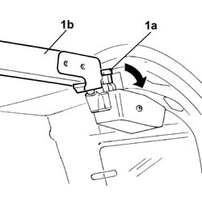
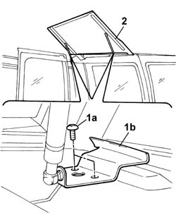
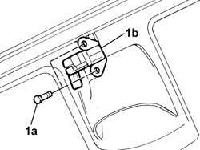
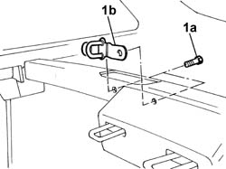

7210L92 load compartment roof flap
- Path
- Procedures > 72 PANELS AND FRAMES > 7210 REMOVING-REFITTING > 7210L specific parts for commercial vehicle > 7210L92 load compartment roof flap
- Kind
- repair procedure (removal / refitting; the operation number is the code)
- Applies to
- all engines; all production periods
- Interactive page
- https://sloeber94.github.io/elrnDB-fDbl/en/#/2585278
Applies to: all engines; all production periods; only with equipment: Doblò trim level
 Removing
Removing
 Refitting
RefittingApplies to: all engines; all production periods; only with equipment: Doblò trim level
1. Operate lever (1a) and release support beam (1b).

Applies to: all engines; all production periods; only with equipment: Doblò trim level
1. Undo retaining bolts (1a), body side, securing the joints of butterfly window (1b).
2. Remove the butterfly window assembly and place on a stand.

Applies to: all engines; all production periods
Refitting
RemovingCheck that the butterfly window is undamaged.
Screw in the bolts securing the joint on the body side without tightening.
Reposition the support beam.
1. Loosen the bolts (1a) fixing the butterfly window catch (1b).

Applies to: all engines; all production periods
1. Loosen the bolts (1a) securing the butterfly window catch (1b)

Applies to: all engines; all production periods
Adjust butterfly window position.
When adjustment is complete, tighten the bolts securing the catch, striker and joints.
Applies to: all engines; all production periods; only with equipment: Doblò trim level